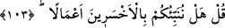
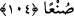
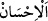

Hikâye edildiğine göre müşrik ve zorba bir melik vardı. Müslümanlar onu
yakaladılar, bir kazanın içine koydular ve şiddetli ateşe sürdüler. Bunun üzerine kral
müslüman oldu, Allah’a yalvarıp yakarmaya başladı. Bir anda yağmur yağdı, şiddetli
bir rüzgar esti ve kralı bir memlekete attı. Bu memleket halkı da onu görünce kim
olduğunu sordular. “Ben falan memleketin kralıyım, müslüman oldum, Allah’a iltica
ettim, Rabbim de şiddetli ateşten beni kurtardı.” dedi. Allah’ın büyük kudretini ve
tevhidinin delillerini gören bu memleket halkı da müslüman oldu. Hamd, Allah Teâlâ’ya
mahsustur.
103. De ki: Size, (yaptıkları) işler bakımından en çok ziyana uğrayanları
bildirelim mi?
“De ki:” Ey kâfirler! Ben ve bana tâbî olan mü’minler, “Size, (yaptıkları) işler
bakımından en çok ziyana uğrayanları bildirelim mi?” Yâni yaptıkları işlerde insanlar
arasında en büyük ziyâna ve hüsrâna uğrayan kavmi, size haber verelim mi?
el-İrşâd’da şöyle der: “Bu, kâfirlerin kendilerinden sâdır olan sıla-i rahim, fakirleri
doyurma, köle âzâdı ve benzeri iyi amelleri bakımından hallerinin beyânıdır. Ya da bu,
aslında kötü olsa da iyi zannettikleri, sevâbına nâil olmayı umdukları ve eserlerini
görmek istedikleri kötü amellerinin acı âkıbetinin beyânıdır.
104. (Bunlar;) iyi işler yaptıklarını sandıkları halde, dünya hayatında çabaları
boşa giden kimselerdir.
Sanki “Onlar kimdir?” denilmiş ve: “Bunlar şu kimselerdir…” diye cevab verilmiştir.
“(Bunlar;) iyi işler yaptıklarını sandıkları” yâni onlar kendileri de âhirette fayda
görecekleri inancıyla iyi iş yaptıklarını zannettikleri “halde, dünya hayatında
çabaları” iyi amelleri yapma konusunda gösterdikleri gayretleri tamamen “boşa giden
kimselerdir.” Onların dünyada güzel ve iyi görünen amelleri zâyi ve telef oldu.
“Dünya hayatında” ifâdesi, ‘boşa gitmek’le değil “çabaları” ile ilgilidir. Çünkü
onların çabalarının boşa gitmesi dünyaya has değildir.
“
(iyi iş yapmak)” amelleri lâyık olduğu şekilde işlemektir. Bu da o amelin
bizatihî iyi olmasını gerektiren vasfî güzelliğidir. Yâni onlar, yaptıkları bu amelleri
lâyıkı ile yaptıklarını zannederler ve harcadıkları çabaları ve elde etmek için yaptıkları